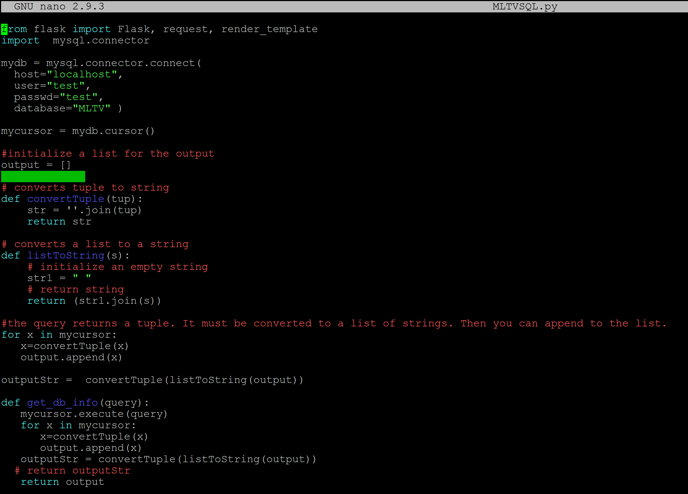
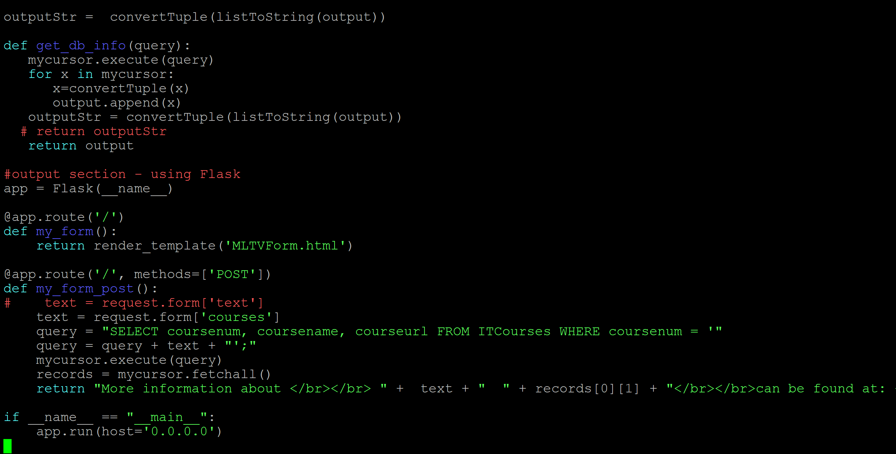
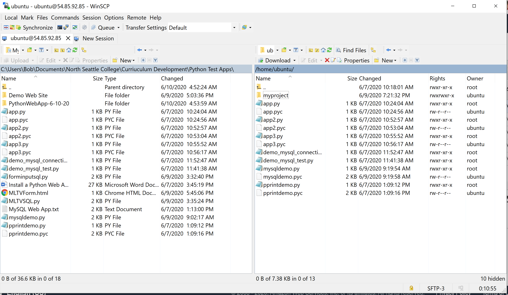
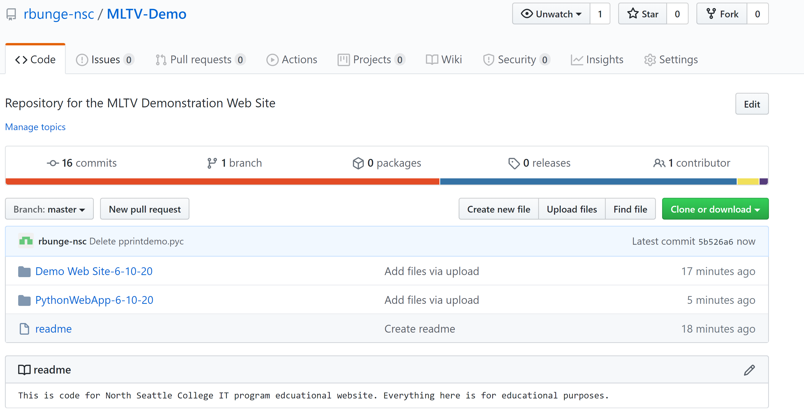

This will be our new first course in programming. The course will be taught with Python. This demonstration website uses Python for a database web application. Below are some samples of the Python code used on this web site.
The code above is from a Python Web application. Web applications connect to databases on the backend and to web pages on the front end. The code above is for the database connection. The code below illustates how database output goes to a web site.
There are many different ways to host and develop a Python web application. For this project, the technologies selected were those that were easiest to get up and running quickly. Some of these include:
The early phases of a project like this website tend to be fairly disorganized. The main problem is to just get some of the code to work at all. For later phases of the project, to allow the project to grow larger and involve bigger teams, code needs to be cleaned up, organized, and managed. That's what IT115 will be teaching.
Below are a couple examples of some basic code managment and backup. The first image is from WinSCP. This was used to go into Amazon's cloud and get copies of all the files that make up this web site. The second image is from GitHub. GitHub is a more sophisticated code management system that allows for multiple collaborators. If this project grows and involves more team members, GitHub will become important for managing the code.
 